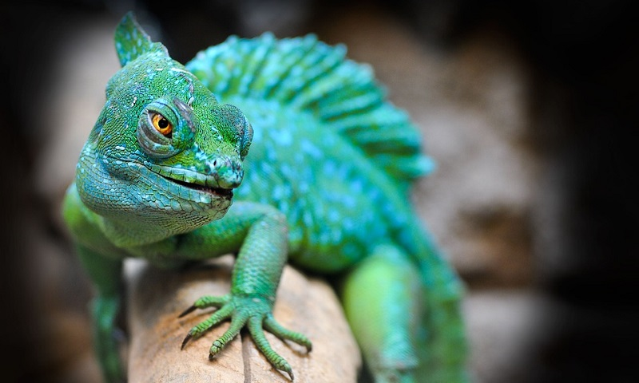

Vertebrados são animais que fazem parte do filo Chordata e se destacam pela presença de coluna vertebral. Peixes, anfíbios, répteis, aves e mamíferos são vertebrados. "Vertebrados são um grupo de animais que, entre outras características, destacam-se por possuírem coluna vertebral e crânio, tais como os peixes, anfíbios, répteis, aves e mamíferos. Os vertebrados fazem parte do filo Chordata, um grupo de animais que apresenta como características marcantes a presença de uma notocorda, um cordão nervoso dorsal oco, fendas faringianas e uma cauda muscular pós-anal."
Os primeiros vertebrados verdadeiros na Terra, os peixes evoluíram de ancestrais invertebrados há cerca de 500 milhões de anos e têm dominado os oceanos, lagos e rios do mundo desde então. Existem três tipos principais de peixes: peixes ósseos, que incluem espécies familiares como o atum e o salmão; peixes cartilaginosos, que incluem tubarões, raias e patins; e peixes sem mandíbula, uma pequena família composta inteiramente por hagfish e lampreias). Os peixes respiram por brânquias e são equipados com “linhas laterais”, redes de receptores interconectados ao longo da cabeça e do corpo que detectam correntes de água e até eletricidade.
Quando os primeiros anfíbios evoluíram de seus ancestrais tetrápodes há 400 milhões de anos, eles rapidamente se tornaram os vertebrados dominantes na Terra. No entanto, seu reinado não estava destinado a durar; as rãs, sapos, salamandras e cecílios (anfíbios sem pernas) que compõem esse grupo foram há muito ultrapassados por répteis, pássaros e mamíferos. Os anfíbios são caracterizados por seu estilo de vida semiaquático (devem permanecer próximos a corpos d’água para manter a umidade da pele e para colocar ovos), e hoje estão entre os animais mais ameaçados do mundo.

Os répteis , como os anfíbios, constituem uma proporção bastante pequena dos animais terrestres, mas como dinossauros, eles governaram a Terra por mais de 150 milhões de anos. Existem quatro tipos básicos de répteis: crocodilos e crocodilos; tartarugas e jabutis; cobras; e lagartos. Os répteis são caracterizados por seu metabolismo de sangue frio – eles se alimentam pela exposição ao sol -, sua pele escamosa e seus ovos de couro, que eles, ao contrário dos anfíbios, podem colocar a alguma distância de corpos d’água.
Os pássaros evoluíram dos dinossauros – não uma, mas provavelmente várias vezes – durante a Era Mesozóica. Hoje eles são de longe os vertebrados voadores mais prolíficos, totalizando 10.000 espécies em 30 ordens distintas. Os pássaros são caracterizados por seus casacos de penas, seu metabolismo de sangue quente, suas canções memoráveis (pelo menos em certas espécies) e sua capacidade de se adaptar a uma ampla variedade de habitats – testemunha os avestruzes das planícies australianas e os pinguins do Litoral Antártico.
É natural que as pessoas considerem os mamíferos o pináculo da evolução. Afinal, os humanos são mamíferos , assim como nossos ancestrais. Mas, na verdade, os mamíferos estão entre os grupos de animais menos diversos: existem apenas cerca de 5.000 espécies no total. Os mamíferos são caracterizados por seus cabelos ou pelos, que todas as espécies possuem durante algum estágio de seus ciclos de vida; o leite com que amamentam seus filhotes e seu metabolismo de sangue quente, que, como acontece com os pássaros, permite que habitem uma ampla variedade de habitats, que vão desde desertos a oceanos e tundra ártica.

Curiosidades sobre os Vertebrados. •O termo vertebrado vem do latim “vertebratus”e significa "presença de vértebras". •O número de animais vertebrados existentes é de aproximadamente 50 mil espécies. •Os animais vertebrados são os seres vivos que possuem o organismo mais avançado do planeta.